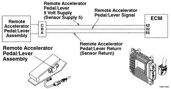
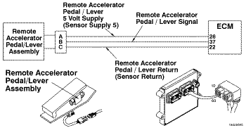
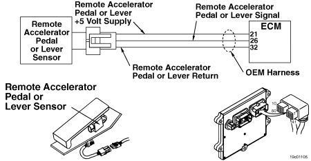

Cdigo de Falha 133
|
| CDIGO | RAZO | EFEITO |
| Cdigo de Falha:133 PID:P372 SPN:974 FMI:3/3 LMPADA:Vermelha SRT: |
Circuito 1 do Sensor da Posio do Pedal ou da Alavanca do Acelerador Remoto - Voltagem Acima da Normal ou com Voltagem Alta. Detectada voltagem alta no circuito de sinal de posio do pedal do acelerador remoto. |
O acelerador remoto no ir funcionar. A posio do acelerador remoto ser ajustada para 0 por cento. |
|
 ISF2.8 CM2220 E/ISF2.8 CM2220 AN/ISF3.8 CM2220 AN - Circuito do Sensor de Posio do Pedal do Acelerador Remoto
|
|
 ISB4.5, ISB6.7, ISD4.5 e ISD6.7 CM2150 SN/ISL8.9 CM2150 SN/ISZ13 CM2150 - Circuito do Sensor de Posio do Pedal do Acelerador Remoto
|
|
 ISM11 CM876 SN - Circuito do Sensor de Posio do Pedal do Acelerador Remoto
|
O sensor de posio do acelerador remoto um potencimetro conectado na alavanca do acelerador remoto. O sensor de posio do acelerador remoto varia a voltagem do sinal para o mdulo eletrnico de controle (ECM) quando a alavanca do acelerador remoto pressionada e liberada. O ECM recebe uma voltagem baixa de sinal quando a leitura da posio da alavanca do acelerador remoto 0%. O ECM recebe uma voltagem alta do sinal quando a leitura da posio da alavanca do acelerador remoto 100%. O circuito de posio do pedal do acelerador remoto contm uma fonte de alimentao de 5 volts, um retorno e um sinal da posio do pedal do acelerador remoto.
A localizao do pedal ou da alavanca do acelerador remoto varia de acordo com o OEM.
Este diagnstico executado continuamente quando a chave de ignio encontra-se na posio ON.
O ECM detecta que a voltagem do sinal do pedal do acelerador remoto maior que um valor calibrvel durante mais de 1 segundo.
Se estiver fazendo o diagnstico de um problema intermitente do acelerador:
A voltagem do sinal do sensor de posio do pedal ou da alavanca do acelerador remoto pode ser monitorada com a ferramenta eletrnica de servio INSITE, durante a flexo do chicote para localizar a conexo intermitente. As conexes intermitentes aparecem como mudanas abruptas na voltagem do sinal mostradas pela ferramenta eletrnica de servio INSITE.
As possveis causas desta falha so:
Os trs fios do circuito do sensor da posio do acelerador remoto devem ser tranados juntos.
Consulte o diagnstico do Cdigo de Falha 133.